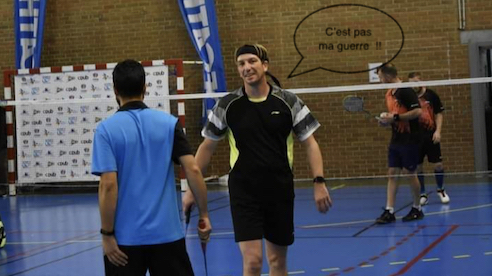

Les spéculos
On a créé une troupe de théâtre "Les spéculos" depuis quelques années (décennies) qui se veut drôle et comique....(je vous laisse découvrir l'extrait)!!
Vous trouverez d'autres vidéos en suivant ce lien

Issu du spectacle vivant, je suis actuellement en e-learning "Graduate Développeur web full stack" avec l'école "Studi - Digital Education". Entre ma formation et mon ancien boulot de technicien du spectacle voilà deux de mes passions.
On a créé une troupe de théâtre "Les spéculos" depuis quelques années (décennies) qui se veut drôle et comique....(je vous laisse découvrir l'extrait)!!
Vous trouverez d'autres vidéos en suivant ce lien
Je fais du badminton depuis 2 ans (enfin entre 2 confinements!).... D'ailleurs l'un de mes projets évolue autour de cette pratique afin d'améliorer les échanges entre tous les joueurs (même de différent niveaux)...
